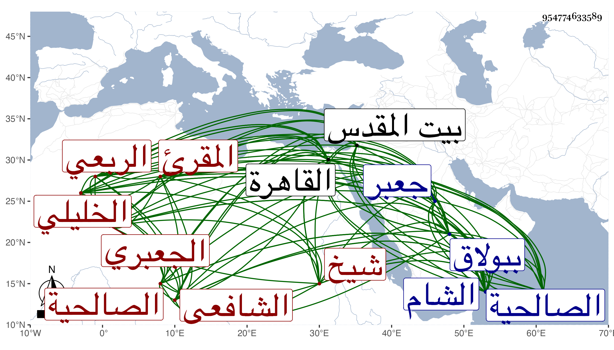

0902Sakhawi.DawLamic.ITO20230111-ara1.EIS1600.954774633589
Biography ID: 954774633589
390
عمر بن محمد بن علي بن محمد بن إبراهيم بن عمر بن إبراهيم بن خليل ابن أبي العباس السراج أبو حفص الربعي الجعبري الأصل نسبة لقلعة جعبر الخليلي الشافعي المقرئ شيخ بلد الخليل . ولد كما أخبرني به في سنة خمس وثمانمائة ببلاد الخليل . ونشأ بها فحفظ القرآن عند الجولاني بالجيم وصلى به أجمع على قاعدة الشاميين وخطب ، والمنهاج والشاطبية والملحة وعرض المنهاج على الخطيب التاج إسحاق بن إبراهيم التميمي وأجاز له والملحة على العلاء قاضي الخليل وتفقه بالتاج الخطيب وبابن رسلان والشمس البرماوي وغيرهم وتلا لنافع وابن كثير وأبي عمرو على الشمس محمد بن صلح الزرعي وللسبع جمعا لبعض ختمة علي أبي القسم النويري وكذا بالشام على الفخر بن الصلف وقرأ عليه بعض البخاري وبحث في النحو على موسى المغربي وغيره ، ثم انتقل إلى القدس فبحث عليه طرفا من المنهاج الفرعي ، وسمع دروسه في غير وأجاز له ولازم التاج الغرابيلي في سماع غالب منظومة ابن الحاجب لمقدمته في النحو بل قرأ عليه شرح النخبة لشيخنا وكذا لازم ماهرا وابن شرف وبحث عليه غالب ألفية ابن مالك وسمع على الشمس التدمري وإبراهيم عظيمات وابن الجزري ومحمد بن علي بن البرهان وأحمد ابن حسين النصيبي وعلي بن إسماعيل بن إبراهيم القصراوي المسلسل وجزء ابن عرفة وعلى الثلاثة الأولين تسعة أحاديث منتقاة من جزء الأنصاري والمسلسل بالمصافحة وعلى الأولين منتقى من مشيخة ابن كليب ومن ثمانيات النجيب وجميع نسخة إبراهيم بن سعد وجزء البطاقة وحديث الهميان وعلى الأول فقط منتقى من الغيلانيات وعلى الثلاثة الأخيرين مشيخة قاضي المرستان الصغري والحديث الأول من عشرة الخلال ومن الغيلانيات ومن المنتقى من ثمانينات النجيب ومن نسخة إبراهيم بن سعد ، وارتحل إلى القاهرة فأخذ القراءات أيضا عن التاج بن تمرية والحديث عن شيخنا قرأ عليه الأربعين المتباينة ومن شرح النخبة وكذا حضر دروس الونائي والجمال الأمشاطي وغيرهما وإلى الشام فأخذ بها عن الفخر ابن الصلف كما تقدم وعن الشمس بن ناصر الدين ونزل الصالحية وسمع دروس شيخها العز القدسي وأجاز له القبابي وغيره ، وحج غير مرة وولي مشيخة بلده كأسلافه والتدريس به وكذا خطب به نيابة وانتفع به جماعة من أهلها ، وكتب عنه البقاعي وغيره ، وتكرر قدومه القاهرة ، ولقيته بها غير مرة أولها ببولاق سنة سبع وستين وكتبت عنه ما أنشده لشيخنا يمدح به نخبته فقال :
| أبدعت يا حبر في كل الفنون بما | صنفت في العلم من بسط ومختصر |
| علم الحديث به أصبحت منفردا | وللأنام فقد أبرزت من غرر |
| لقد جلوت عروس الحسن مبتكرا | فيما أتيت به من نخبة الفكر |
| إذا تأملها بالفكر ناظرها | تهمي فوائدها للفكر كالمطر |
وسألني عن بعض الأحاديث فأجبته بما احتفل به ووقع عنده موقعا بحيث قرأه علي بلفظه بل قصدني غير مرة في سنة تسع وثمانين وحدثت في منزلي أنا وإياه بعدة أجزاء وتزايد اغتباطه بي ، وهو إنسان خير راغب في الحديث ولقاء أهله ذو فكر صائب وذهن جيد متواضع حسن العشرة كثير التودد جميل الطريقة بهي الرؤية صحيح العقيدة مشارك في الفضيلة من بيت مشيخة وجلالة ، أثنى عليه شيخنا فيما قرأته بخطه في بعض تعاليقه فقال : قدم علي شخص كهل اسمه عمر ابن محمد بن علي بن محمد بن الشيخ برهان الدين إبراهيم بن عمر الجعبري من أهل الخليل وذكر لي أن أباه حي وهو كثير المحبة للحديث والتطلع إلى الاشتغال فيه فقرأ على الأربعين المتباينة ومن شرح نخبة الفكر وذلك في سنة خمس وثلاثين ، وهو ممن خطب في بلد الخليل نيابة وأجزته انتهى . مات في ضحى يوم الاثنين ثالث رمضان سنة ثلاث وتسعين وصلي عليه في مشهد حافل تقدمهم ابن أخيه الزين عبد الباسط ودفن بمقبرة الرأس ، واستقر في وظيفته مشيخة الحرم بنوه الخمسة رحمه الله وإيانا .
